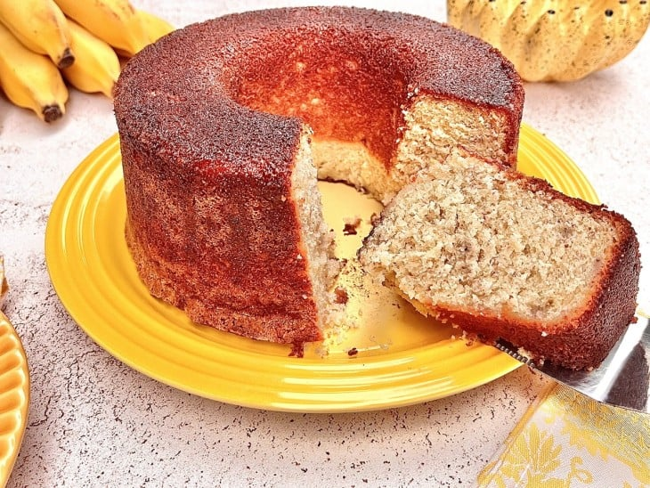

Ingredientes:
- 3 ovos
- 3 colheres de sopa de manteiga (ou margarina) em temperatura ambiente
- 2 xícaras de chá de açúcar (400 gramas)
- 4 bananas maduras amassadas com o garfo
- 2 e 1/2 xícaras de chá de farinha de trigo (350 gramas)
- 1 xícara de chá de leite (240 ml)
- 1 pitada de sal
- 1 colher de chá de fermento químico em pó (fermento para bolo)
- 2 colheres de sopa de açúcar com canela em pó (para polvilhar)
- 2 colheres de sopa de canela em pó (para polvilhar)
Modo de Preparo:
- Reúna todos os ingredientes do bolo de banana fofinho;
- Quebre os ovos em um recipiente separado, para verificar se não há nenhum estragado. Depois, em um recipiente, coloque os ovos, a manteiga, o açúcar e bata com um fouet até formar um creme bem lisinho;
- Em seguida, adicione as bananas, a farinha e misture bem;
- Depois, acrescente o leite e misture;
- Junte o sal, o fermento e misture delicadamente para incorporar;
- Despeje a massa em uma forma com furo no meio (redonda de 20 cm de diâmetro), untada e enfarinhada. Finalize polvilhando o açúcar com a canela em pó por cima do bolo;
- Leve ao forno preaquecido a 180°C por cerca de 40 minutos ou até você fazer o teste do palito: você espeta um palitinho no meio da massa, se ele sair seco, é porque está no pronto. Agora é só servir. Bom apetite!
- Passo 4...